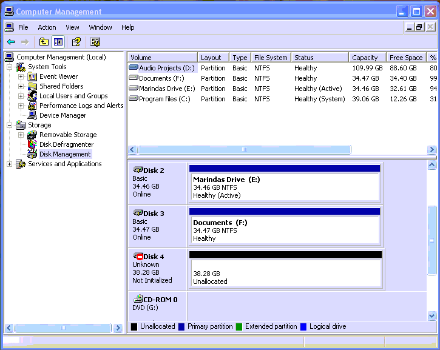

To find out the physical drive number of the hd24 disk, you will need to open up the administrative tools on your computer. The easy way is to go to Control Panel -> Admin Tools -> Computer Management. (If you can not find this, you can search for it in Start -> Help) In Computer Management, expand the "Storage" section and go to disk management. This will typically show an image such as the following:

The drive marked as "Unknown" is the ADAT drive. (If you have multiple fireports, make sure you have only 1 connected at the time that you want to figure out the drive number). So, in the above example, the drive number is 4. If there is no "Unknown" drive, write down what drives there are and disconnect the ADAT drive, then repeat the procedure. The ADAT drive is the drive that has disappeared from the list.
Once you find the drive number, the device name to use with HD24tools is //./PHYSICALDRIVE# (replacing # with the drive number). In HD24connect, this device name can either be selected from the dropdown list in menu File->Recovery->Select device... or manually entered in the field below it when you choose Other device.